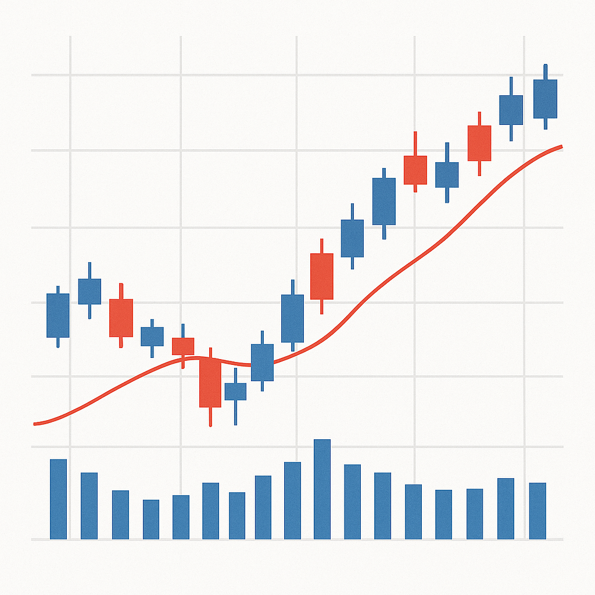

株を始める初心者の方へ基礎を解説します。
解説のSTEP
- STEP1 :基本用語一覧
- STEP2 :株の業界用語
- STEP3 :チャートの基礎的な味方
- STEP4 :初心者におすすめの証券
この順に解説をしていきます。量が多いですが（特に単語）覚えておくとスムーズに取引に望めるようになります。
株のよく見るけど意味がわかりづらい用語一覧【初心者向け】
| 言葉 | 意味 |
|---|---|
| 指値注文（さしねちゅうもん） | 買いたい・売りたい「値段」を自分で指定する注文方法。希望価格に届かなければ売買は成立しない。 |
| 成行注文（なりゆきちゅうもん） | 値段を指定せずに即売買する方法。すぐに成立しやすいが、思わぬ価格で約定することも。 |
| 約定（やくじょう） | 株の売買が成立すること。「注文が通る」という意味。読み方に注意。 |
| 利確（りかく） | 利益確定の略。株を売って利益を確定すること。逆は「損切り」。 |
| 損切り（そんぎり） | 含み損が大きくなる前に、あえて売って損失を確定する行為。リスク管理のひとつ。 |
| 出来高（できだか） | 株の「買いたい」「売りたい」価格と数量の一覧。注文の勢いや需給がわかる。 |
| PER（ピーイーアール） | 株価収益率。株価が利益に対して割高か割安かを判断する目安。低ければ割安とされる。 |
| PBR（ピービーアール） | 株価純資産倍率。会社の資産に対して株価が高いか安いかを見る指標。 |
| 配当利回り | 株価に対する配当金の割合。利回りが高いほど、お得感がある。 |
| 権利確定日 | 配当や株主優待をもらえるかどうかが決まる日。この日に株を持っていれば対象になる。 |
| 信用取引 | 証券会社からお金や株を借りて行う取引。リターンもリスクも大きくなる。初心者は注意。 |
| 空売り（からうり） | 株を持っていないのに「売り」から入る取引。値下がりで利益を狙う方法。 |
| ロスカット | 損失が一定ラインを超えたときに自動で損切りする仕組み。追証（追加証拠金）を防ぐため。 |
| NISA（ニーサ） | 株や投資信託の利益が非課税になる制度。長期投資向けで、初心者にも人気。 |
| iDeCo（イデコ） | 自分で作る年金制度。節税しながら資産を運用できるが、60歳まで引き出せない。 |
SNSや証券アプリで見かける「株の業界用語」解説一覧【初心者向け】
📈 取引時間・値動きに関する用語
| 言葉 | 意味 |
|---|---|
| 寄り付き（よりつき） | 株式市場のその日の最初の取引価格のこと。9:00に決まる。 |
| 引け（ひけ） | その日の最後の取引価格（終値）。15:00に決まる。 |
| GU・GD | ギャップアップ／ギャップダウンの略。寄り付きが前日の終値より大きく上がる（GU）／下がる（GD）こと。 |
| PTS | 時間外取引のこと。通常の取引時間外に売買できる制度。 |
💼 ポジション・心理系スラング
| 言葉 | 意味 |
|---|---|
| ポジポジ病 | つい何かしら買いたくなってしまう投資癖。冷静な判断を失いやすい。 |
| イナゴ | 流行ってる銘柄に後から群がる投資家のこと。大勢で一気に買いに行く様子がイナゴに例えられる。 |
| ガチホ | 「ガチでホールド」の略。どんな状況でも株を売らずに持ち続ける姿勢。 |
| 握力 | 保有株を売らずに耐える力。下落時に売らずに「握る」強さの比喩。 |
💥 売買に関する表現
| 言葉 | 意味 |
|---|---|
| ポジション（ポジ） | 株を持っている状態のこと。「ノーポジ」は何も持ってない状態。 |
| 高値掴み | 株価が高いときに買って、その後下落して損すること。 |
| ナンピン | 株価が下がったときに、さらに買い増して平均取得単価を下げる行為。リスクも大きい。 |
| 含み益／含み損 | 売却していない状態で出ている利益／損失のこと。 |
| 飛ぶ（とぶ） | 株価が急騰すること。「今日この銘柄飛んだわ」は爆上げしたという意味。 |
| 刺さる | 指値注文が市場価格に到達して、約定すること。「注文が刺さった」と言う。 |
| 板がスカスカ | 注文板の売買注文数が少ないこと。売買が成立しづらく、値動きが荒れやすい。 |
📉 チャート用語っぽいもの
| 言葉 | 意味 | 天井（てんじょう） | 株価の上昇が限界に達し、これ以上は上がりにくいとされる状態。 |
|---|---|
| 底（そこ） | 株価がこれ以上下がらないと思われる状態。「底打ち」はそこから上がり始めること。 |
| 押し目（おしめ） | 上昇中の株が一時的に下がるタイミング。買い増しの好機とされることも。 |
📊 初心者向け：チャートの読み方・基礎ガイド
ローソク足とは？
株価やFXなどの値動きを表す「棒グラフのような形」です。
見た目のポイント
- 色つき（赤や黒）＝下がった日（陰線）
- 白っぽい or 緑＝上がった日（陽線）
- 太い部分（実体）：その日の【始値と終値】
- 上下の細い線（ヒゲ）：その日の【高値と安値】
- ✅ これを見ると…
- 「この日は上がったか？下がったか？」
- 「一時どれくらいまで上がった？下がった？」がすぐわかる！
移動平均線（MA）とは？
- 株価の平均を線にしたもの（よくあるのは5日・25日・75日線など）
- ローソク足の上や下をなめるように伸びる線）
- ✅ どう使うの？
- 平均線より上に株価がある→強い（上昇トレンド）
- 平均線より下にある→弱い（下落トレンド）
- 線が交差すると転換のサインかも？
| 見るところ | チェック内容 |
|---|---|
| ローソク足 | 色・長さ・ヒゲの位置を見る |
| 出来高 | 増えてる＝注目されてる日かも！ |
| 移動平均線 | 線より上なら「上昇中」かも |
| クロス現象 | ゴールデンクロス＝買いが増える予兆 |
📌 チャートの基礎を学んだら、次は実践！
ローソク足の形やトレンドの流れを少しずつ見慣れていけば、相場の動きも自然と読めるようになります。
まずは自分の目で、実際のチャートに触れてみましょう。
無料ではじめられるので、まずは気軽にチェックしてみてくださいね。